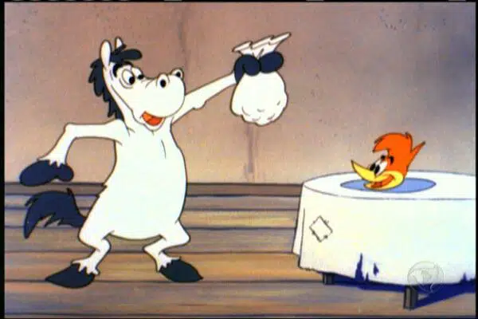

O Pica-Pau tem, possivelmente, o riso mais famoso da história dos desenhos animados: o seu inconfundível “hehehehe’! Um pássaro que, como sempre, é muito rápido, imprevisível e muito engraçado.
O personagem foi criado por Walter Lanz há mais de 80 anos, precisamente em 1940, durante sua viagem de lua de mel. Um dia, enquanto chovia, ouviu um insistente Pica-Pau que não parava de bicar seu telhado. Ele achou tão irritante que pensou que um desenho como esse poderia irritar seus outros personagens.

Quem foi o criador de Pica-Pau?
Walter Lantz nasceu em 1899, em New Rochelle, em Nova York, mas aos 15 anos, mudou-se para Manhattan. Então, começou a trabalhar como mensageiro e entregador para um doa maiores jornais da época.